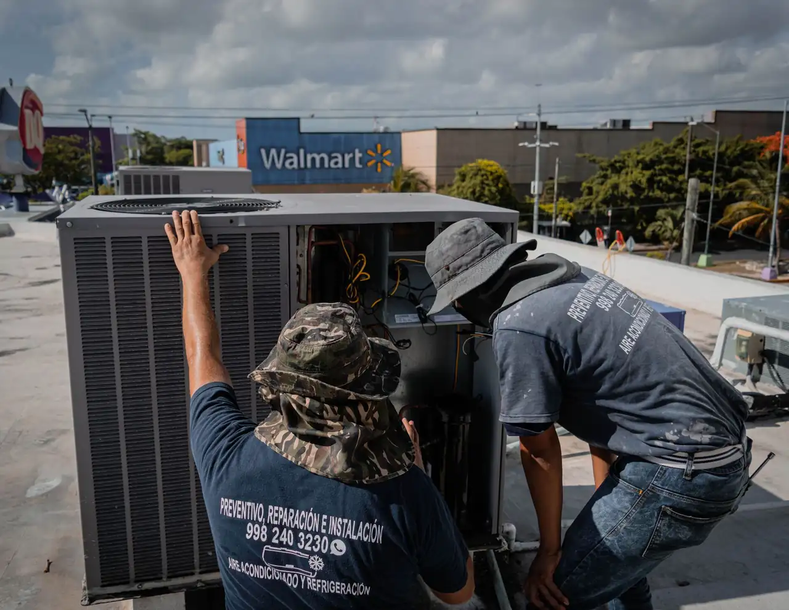

Focused arrival windows
Useful updates and clear arrival timing.
Heat Pump Repair in Las Vegas is crucial for maintaining your home's comfort, especially during the scorching summer months. Our expert technicians are ready to handle all your heat pump needs, ensuring your system runs efficiently and effectively.
Useful updates and clear arrival timing.
Review the approach and price before deciding.
Equipped vehicles and respectful cleanup.
Neighbors serving neighbors with follow-through.
Our heat pump repair services cover a comprehensive inspection and repair process, ensuring your system is restored to optimal performance. Additional services may be offered based on the specific issues discovered during the inspection.
We thoroughly inspect your heat pump system, identifying any potential issues that could affect performance.
We ensure your thermostat is calibrated correctly to maintain the desired temperature efficiently.
Our technicians check refrigerant levels to ensure your system operates efficiently and effectively.
We address common problems like leaking refrigerant and frozen coils, restoring your heat pump's functionality.
Share what is happening and receive a clear next step from the local team.
Heat Pump Repair in Las Vegas involves diagnosing and fixing issues within your heat pump system, ensuring it operates efficiently. This service is essential when your heat pump fails to heat or cool effectively, leading to increased energy bills and discomfort.
Local Las Vegas customers often need heat pump repair due to the extreme temperatures experienced throughout the year. Common issues include frozen evaporator coils and thermostat problems, which can disrupt your indoor climate control.

During the initial consultation, our technician will discuss your concerns, schedule a visit, and gather information about your heat pump system.
Our technician will perform a comprehensive inspection using tools like refrigerant gauges and manifold gauge sets to identify any issues.
Once the inspection is complete, the technician will diagnose any problems, such as a frozen evaporator coil or leaking refrigerant.
The technician will provide you with a detailed explanation of the necessary repairs and associated costs, ensuring you understand the process.
After repairs are made, we will test the system to ensure it operates correctly, leaving you with a fully functional heat pump.

Used to measure the pressure of refrigerant in your heat pump system, ensuring it operates within optimal levels.
Essential for diagnosing refrigerant issues and performing maintenance on heat pumps.
Used to remove moisture and air from the refrigerant lines, ensuring a clean system for efficient operation.
Allows for precise temperature control and can be programmed for energy savings.
Regular maintenance checks help identify potential issues before they escalate, ensuring your heat pump runs efficiently.
We use advanced diagnostic tools to pinpoint issues accurately, allowing for targeted repairs.
Testing the system for energy efficiency helps identify areas for improvement, ensuring lower utility bills.

Contact us immediately to diagnose the source of the noise, whether it's a mechanical issue or a refrigerant leak. This prompt action can prevent further damage and costly repairs.
Schedule a service call to evaluate the system's performance and identify any issues affecting heating or cooling. Timely repairs can restore comfort and improve energy efficiency.
Call us to address the frozen components, which may indicate refrigerant issues or airflow problems. Our quick response can prevent extensive damage and ensure your system operates effectively.
Las Vegas's unique climate presents specific challenges for heat pump systems. With extreme temperatures, it's essential to ensure your heat pump is functioning optimally. Local building codes require adherence to specific standards, and our technicians are well-versed in these regulations. We also understand common issues like frozen coils due to high humidity levels, making our local expertise invaluable.
Known for its upscale homes, Summerlin residents often require efficient heat pump systems to combat the desert heat.
Henderson's residential areas frequently experience heat pump issues due to fluctuating temperatures.
This area is prone to power outages, making reliable heat pump performance critical for comfort.
These can strain heat pump systems, leading to breakdowns if not properly maintained.
Infrequent but possible, low temperatures can affect heat pump efficiency and performance.
A homeowner reported that their heat pump was not cooling effectively, leading to discomfort during the summer.
After our repair, the heat pump cooled the home to a comfortable 72°F, improving energy efficiency by 25%.
Maintenance: Regular maintenance checks every six months will help keep the system running efficiently.
The homeowner noticed ice forming on the heat pump, indicating a refrigerant issue.
Post-repair, the ice was cleared, and the system operated normally, restoring comfort and efficiency.
Maintenance: Ensure proper airflow and schedule annual inspections to prevent future freezing.
The thermostat was not accurately reading temperatures, causing inconsistent heating.
After recalibrating the thermostat, the home maintained a consistent temperature, enhancing comfort.
Maintenance: Check thermostat settings regularly and replace batteries as needed.
Heat pump repair addresses several common issues faced by homeowners in Las Vegas, ensuring your system operates smoothly.
This can lead to discomfort, especially during the hot summer months, making your home unlivable. Our technicians will diagnose the issue, which may include refrigerant leaks or compressor failures, and provide effective repairs.
A frozen coil can cause your heat pump to fail, leading to costly repairs and discomfort. We will inspect the system, defrost the coil, and address any underlying issues to prevent recurrence.
If your thermostat is malfunctioning, it can cause inconsistent temperatures and increased energy bills. We will calibrate or replace your thermostat, ensuring accurate temperature control and energy efficiency.
At Vegas Cool AC Repair, our team has extensive experience in heat pump repair, backed by certifications such as EPA Certification and NATE Certification. Our technicians are well-versed in various brands like Trane, Carrier, and Lennox, ensuring high-quality service.
Common signs include inconsistent temperatures, unusual noises, and increased energy bills. If you notice any of these issues, it's time to call for heat pump repair.
Heat pump repair typically costs between $180 and $450, depending on the issue and the parts needed for the repair.
Most heat pump repair jobs take between two to four hours, depending on the complexity of the issue.
It's advisable to schedule maintenance at least once a year, ideally before the peak heating or cooling seasons, to ensure optimal performance.
Not seeing your question? Our local team can help you understand urgency, scheduling and what to expect.
Ask the local team
Our AC repair service complements heat pump repair by addressing issues that affect cooling efficiency, ensuring your system is ready for the summer heat.
View service
We provide emergency AC repair services for urgent situations, ensuring your home remains comfortable during unexpected breakdowns.
View serviceIf your heat pump is beyond repair, our AC installation service can help you find a new, energy-efficient unit that meets your needs.
View service
Regular AC maintenance is essential to prevent breakdowns and extend the life of your system, making it a perfect complement to heat pump repair.
View serviceWe're here to help with all your AC repair needs in Las Vegas. Contact us for a free estimate or to schedule a service. Please contact us during the business hours listed on our Contact page.